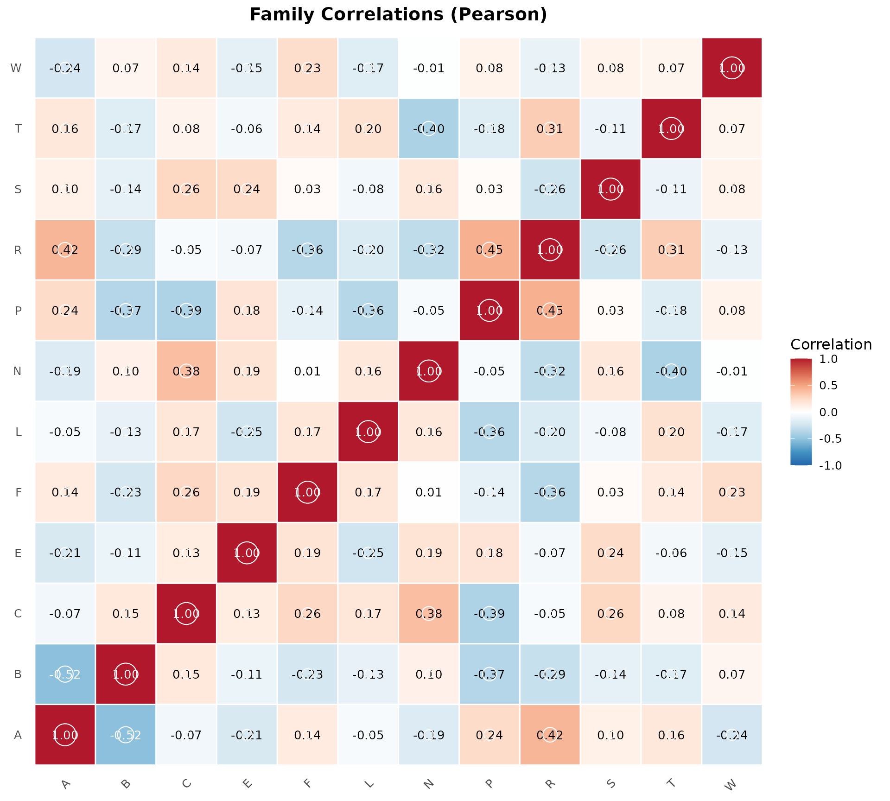
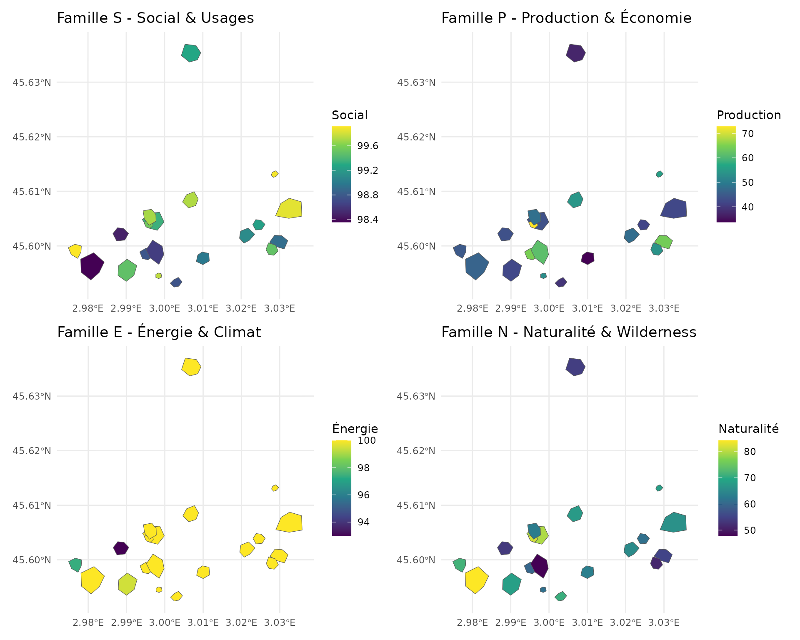
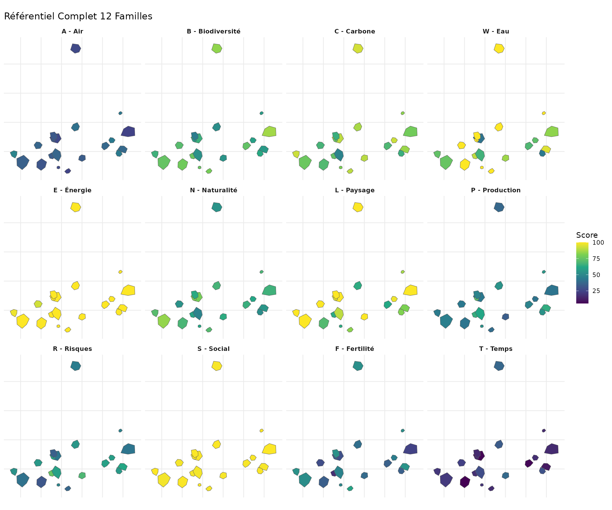
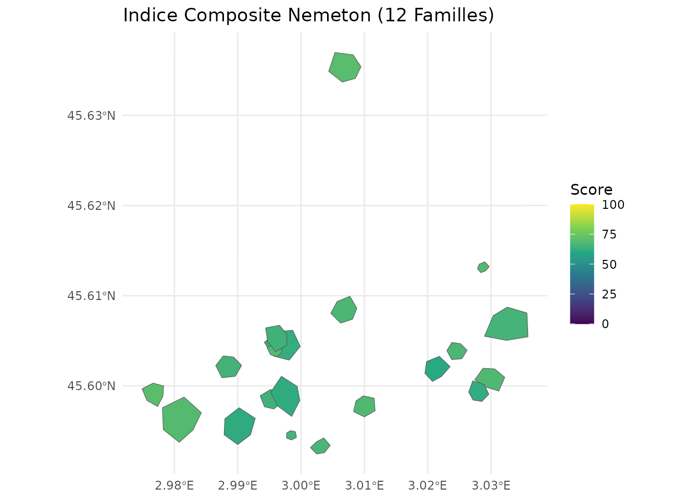
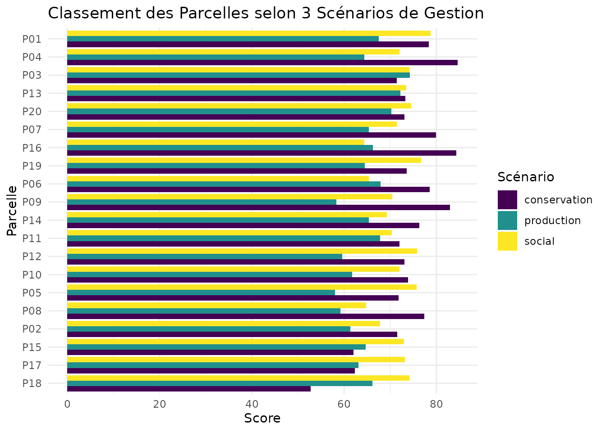

Référentiel Complet 12 Familles
Pascal Obstétar
2026-10-08
Source:vignettes/complete-referential_fr.Rmd
complete-referential_fr.RmdIntroduction
Le package nemeton propose un référentiel complet de
12 familles d’indicateurs pour l’évaluation
multi-critères des services écosystémiques forestiers. Cette vignette
démontre l’utilisation de l’ensemble du référentiel avec le jeu de
données massif_demo_units.
Les 12 Familles
| Code | Famille | Indicateurs | Nb |
|---|---|---|---|
| C | Carbone & Vitalité | C1 (biomasse), C2 (NDVI) | 2 |
| B | Biodiversité | B1 (protection), B2 (structure), B3 (connectivité) | 3 |
| W | Eau | W1 (réseau hydro), W2 (zones humides), W3 (TWI) | 3 |
| A | Air & Microclimat | A1 (couverture), A2 (qualité air) | 2 |
| F | Fertilité des Sols | F1 (fertilité), F2 (érosion) | 2 |
| L | Paysage | L1 (fragmentation), L2 (lisière), L3 (TVB) | 3 |
| T | Temps & Dynamique | T1 (ancienneté), T2 (changements) | 2 |
| R | Risques & Résilience | R1 (incendie), R2 (tempête), R3 (stress), R4 (gibier) | 4 |
| S | Social & Usages | S1 (sentiers), S2 (accessibilité), S3 (proximité) | 3 |
| P | Production & Économie | P1 (volume), P2 (productivité), P3 (qualité) | 3 |
| E | Énergie & Climat | E1 (bois-énergie), E2 (évitement CO2) | 2 |
| N | Naturalité & Wilderness | N1 (distance infra), N2 (continuité), N3 (composite) | 3 |
| Total | 32 |
Chargement des Données
# Le jeu de données de démonstration
data(massif_demo_units)
# Aperçu des données de base
head(massif_demo_units)
#> Simple feature collection with 6 features and 122 fields
#> Geometry type: POLYGON
#> Dimension: XY
#> Bounding box: xmin: 698041.8 ymin: 6499388 xmax: 702507.7 ymax: 6504159
#> Projected CRS: RGF93 v1 / Lambert-93
#> parcel_id forest_type age_class management species age
#> 1 P01 Futaie mixte Mature Mixte 09 68
#> 2 P02 Futaie résineuse Moyen Production 64 33
#> 3 P03 Futaie feuillue Surannée Conservation 03 104
#> 4 P04 Futaie feuillue Surannée Production 03 166
#> 5 P05 Futaie résineuse Moyen Production 61 47
#> 6 P06 Futaie résineuse Mature Production 61 79
#> establishment_year density height dbh volume strata fertility climate
#> 1 1958 266 30.3 45.8 557.7 4 1 continental
#> 2 1993 465 30.4 57.5 1541.7 1 3 atlantique
#> 3 1922 128 31.7 41.7 232.7 2 2 atlantique
#> 4 1860 104 29.9 42.6 186.1 2 1 atlantique
#> 5 1979 324 27.5 51.5 779.5 2 2 atlantique
#> 6 1947 281 38.6 76.1 2072.1 2 1 atlantique
#> surface_ha couvert C1 C2 B1 B2 B3 B4 W1 W2 W3 W4
#> 1 4.989211 0.90 49.01124 NA NA NA 100 NA 0.000000 0 2.172398 NA
#> 2 5.867935 0.75 17.78697 NA NA NA 100 NA 0.000000 0 2.079708 NA
#> 3 6.557777 0.77 70.53634 NA NA NA 100 NA 0.000000 0 2.320038 NA
#> 4 9.989553 0.86 134.98574 NA NA NA 100 NA 8.677353 0 2.179088 NA
#> 5 5.906395 0.82 29.20340 NA NA NA 100 NA 0.000000 0 2.243098 NA
#> 6 1.048296 0.87 56.77781 NA NA NA 100 NA 0.000000 0 2.081669 NA
#> A1 A2 A3 A4 A5 F1 F2 L1 L2 L3 T1 T2 T3 R1 R2
#> 1 99.86906 100.0 NA NA NA NA 15.0 52.4 91.8 NA 68 60 NA 99.92593 35.25631
#> 2 99.97049 99.4 NA NA NA NA 10.3 52.6 93.0 NA 33 60 NA 100.00000 41.96851
#> 3 100.00000 99.5 NA NA NA NA 14.9 51.3 91.2 NA 104 60 NA 100.00000 34.54891
#> 4 99.84681 98.6 NA NA NA NA 13.7 51.5 94.5 NA 166 60 NA 99.89067 35.61949
#> 5 99.77814 99.9 NA NA NA NA 13.1 51.2 94.6 NA 47 60 NA 99.52389 35.99775
#> 6 99.76134 99.9 NA NA NA NA 11.1 51.0 94.6 NA 79 60 NA 99.93789 35.12141
#> R3 R4 R5 R6 R7 S1 S2 S3 P1 P2 P3 E1 E2 N1
#> 1 76.92404 NA NA NA NA 2000.0000 NA NA 625.5427 NA 100 2.074644 2.0725694 NA
#> 2 75.30786 NA NA NA NA 519.1841 NA NA 1916.2231 NA 100 5.735124 5.7293889 NA
#> 3 73.28855 NA NA NA NA 613.0613 NA NA 261.0616 6.5 100 0.865644 0.8647784 NA
#> 4 76.75013 NA NA NA NA 315.2487 NA NA 208.7976 NA 100 0.692292 0.6915997 NA
#> 5 74.29972 NA NA NA NA 1567.7493 NA NA 968.8934 6.5 100 2.899740 2.8968403 NA
#> 6 76.35914 NA NA NA NA 1231.9158 NA NA 2575.4125 NA 100 7.708212 7.7005038 NA
#> N2 N3 b4_status w4_status a3_status a4_status
#> 1 60 NA skipped_no_spectral skipped_no_micro skipped_no_micro skipped_no_micro
#> 2 60 NA skipped_no_spectral skipped_no_micro skipped_no_micro skipped_no_micro
#> 3 60 NA skipped_no_spectral skipped_no_micro skipped_no_micro skipped_no_micro
#> 4 60 NA skipped_no_spectral skipped_no_micro skipped_no_micro skipped_no_micro
#> 5 60 NA skipped_no_spectral skipped_no_micro skipped_no_micro skipped_no_micro
#> 6 60 NA skipped_no_spectral skipped_no_micro skipped_no_micro skipped_no_micro
#> a5_status l3_status t3_status r1_status
#> 1 skipped_no_lst skipped_no_spectral skipped_no_sufosat fire_exp
#> 2 skipped_no_lst skipped_no_spectral skipped_no_sufosat fire_exp
#> 3 skipped_no_lst skipped_no_spectral skipped_no_sufosat fire_exp
#> 4 skipped_no_lst skipped_no_spectral skipped_no_sufosat fire_exp
#> 5 skipped_no_lst skipped_no_spectral skipped_no_sufosat fire_exp
#> 6 skipped_no_lst skipped_no_spectral skipped_no_sufosat fire_exp
#> r5_status r6_status r7_status p3_status C1_norm
#> 1 skipped_no_method skipped_no_micro skipped_no_tmin diametre_seul 32.67416
#> 2 skipped_no_method skipped_no_micro skipped_no_tmin diametre_seul 11.85798
#> 3 skipped_no_method skipped_no_micro skipped_no_tmin diametre_seul 47.02422
#> 4 skipped_no_method skipped_no_micro skipped_no_tmin diametre_seul 89.99050
#> 5 skipped_no_method skipped_no_micro skipped_no_tmin diametre_seul 19.46893
#> 6 skipped_no_method skipped_no_micro skipped_no_tmin diametre_seul 37.85187
#> C2_norm B1_norm B2_norm B3_norm B4_norm W1_norm W2_norm W3_norm W4_norm
#> 1 NA NA NA 100 NA 0.00000 0 0 NA
#> 2 NA NA NA 100 NA 0.00000 0 0 NA
#> 3 NA NA NA 100 NA 0.00000 0 0 NA
#> 4 NA NA NA 100 NA 17.35471 0 0 NA
#> 5 NA NA NA 100 NA 0.00000 0 0 NA
#> 6 NA NA NA 100 NA 0.00000 0 0 NA
#> A1_norm A2_norm A3_norm A4_norm A5_norm F1_norm F2_norm L1_norm L2_norm
#> 1 99.86906 100.0 NA NA NA NA 15.0 47.6 91.8
#> 2 99.97049 99.4 NA NA NA NA 10.3 47.4 93.0
#> 3 100.00000 99.5 NA NA NA NA 14.9 48.7 91.2
#> 4 99.84681 98.6 NA NA NA NA 13.7 48.5 94.5
#> 5 99.77814 99.9 NA NA NA NA 13.1 48.8 94.6
#> 6 99.76134 99.9 NA NA NA NA 11.1 49.0 94.6
#> L3_norm T1_norm T2_norm T3_norm R1_norm R2_norm R3_norm R4_norm
#> 1 NA 34.0 60 NA 7.406871e-02 64.74369 23.07596 NA
#> 2 NA 16.5 60 NA 1.421085e-14 58.03149 24.69214 NA
#> 3 NA 52.0 60 NA 1.421085e-14 65.45109 26.71145 NA
#> 4 NA 83.0 60 NA 1.093308e-01 64.38051 23.24987 NA
#> 5 NA 23.5 60 NA 4.761100e-01 64.00225 25.70028 NA
#> 6 NA 39.5 60 NA 6.211201e-02 64.87859 23.64086 NA
#> R5_norm R6_norm R7_norm S1_norm S2_norm S3_norm P1_norm P2_norm P3_norm
#> 1 NA NA NA 0.00000 NA NA 78.19283 NA 100
#> 2 NA NA NA 74.04080 NA NA 100.00000 NA 100
#> 3 NA NA NA 69.34694 NA NA 32.63271 43.33333 100
#> 4 NA NA NA 84.23757 NA NA 26.09970 NA 100
#> 5 NA NA NA 21.61254 NA NA 100.00000 43.33333 100
#> 6 NA NA NA 38.40421 NA NA 100.00000 NA 100
#> E1_norm E2_norm N1_norm N2_norm N3_norm famille_carbone
#> 1 78.58500 78.50642 NA 60 NA 32.67416
#> 2 100.00000 100.00000 NA 60 NA 11.85798
#> 3 32.78955 32.75676 NA 60 NA 47.02422
#> 4 26.22318 26.19696 NA 60 NA 89.99050
#> 5 100.00000 100.00000 NA 60 NA 19.46893
#> 6 100.00000 100.00000 NA 60 NA 37.85187
#> famille_biodiversite famille_eau famille_air famille_sol famille_paysage
#> 1 100 0.000000 99.93453 15.0 69.70
#> 2 100 0.000000 99.68525 10.3 70.20
#> 3 100 0.000000 99.75000 14.9 69.95
#> 4 100 5.784902 99.22340 13.7 71.50
#> 5 100 0.000000 99.83907 13.1 71.70
#> 6 100 0.000000 99.83067 11.1 71.80
#> famille_temporel famille_risque famille_social famille_production
#> 1 47.00 29.29790 0.00000 89.09642
#> 2 38.25 27.57454 74.04080 100.00000
#> 3 56.00 30.72085 69.34694 58.65535
#> 4 71.50 29.24657 84.23757 63.04985
#> 5 41.75 30.05955 21.61254 81.11111
#> 6 49.75 29.52719 38.40421 100.00000
#> famille_energie famille_naturalite geometry
#> 1 78.54571 60 POLYGON ((698299.9 6499928,...
#> 2 100.00000 60 POLYGON ((701702.2 6500418,...
#> 3 32.77315 60 POLYGON ((702240.4 6500270,...
#> 4 26.21007 60 POLYGON ((700641.3 6504129,...
#> 5 100.00000 60 POLYGON ((699268.2 6500307,...
#> 6 100.00000 60 POLYGON ((699943.5 6499421,...
# Calculer les indicateurs pour la démonstration
# Les indicateurs sont générés de manière synthétique pour les besoins de cette vignette
set.seed(42)
n <- nrow(massif_demo_units)
# Générer des valeurs synthétiques pour tous les indicateurs
massif_demo_units$C1 <- runif(n, 50, 300) # Biomasse t/ha
massif_demo_units$C2 <- runif(n, 0.3, 0.9) # NDVI
massif_demo_units$B1 <- runif(n, 0, 100) # Protection %
massif_demo_units$B2 <- runif(n, 20, 80) # Structure diversity
massif_demo_units$B3 <- runif(n, 100, 3000) # Distance corridor m
massif_demo_units$W1 <- runif(n, 0, 500) # Distance hydro m
massif_demo_units$W2 <- runif(n, 0, 50) # Zones humides %
massif_demo_units$W3 <- runif(n, 2, 15) # TWI
massif_demo_units$A1 <- runif(n, 40, 95) # Couverture %
massif_demo_units$A2 <- runif(n, 1, 5) # Qualité air (ATMO)
massif_demo_units$F1 <- runif(n, 30, 90) # Fertilité
massif_demo_units$F2 <- runif(n, 0, 50) # Érosion
massif_demo_units$L1 <- runif(n, 0.1, 0.9) # Fragmentation
massif_demo_units$L2 <- runif(n, 0, 200) # Lisière m
massif_demo_units$T1 <- runif(n, 20, 150) # Ancienneté ans
massif_demo_units$T2 <- runif(n, -20, 20) # Changement %
massif_demo_units$R1 <- runif(n, 10, 90) # Risque incendie
massif_demo_units$R2 <- runif(n, 10, 80) # Risque tempête
massif_demo_units$R3 <- runif(n, 0, 100) # Stress
massif_demo_units$S1 <- runif(n, 0, 5) # Accessibilité
massif_demo_units$S2 <- runif(n, 0, 100) # Sentiers
massif_demo_units$S3 <- runif(n, 0, 50000) # Proximité m
massif_demo_units$P1 <- runif(n, 50, 500) # Volume m³/ha
massif_demo_units$P2 <- runif(n, 2, 15) # Productivité
massif_demo_units$P3 <- runif(n, 30, 90) # Qualité
massif_demo_units$E1 <- runif(n, 1, 12) # Bois-énergie
massif_demo_units$E2 <- runif(n, 5, 25) # Évitement CO2
massif_demo_units$N1 <- runif(n, 100, 5000) # Distance infra m
massif_demo_units$N2 <- runif(n, 0, 100) # Continuité
massif_demo_units$N3 <- runif(n, 20, 80) # Naturalité compositeCréer les Indices de Famille
Le système de famille permet d’agréger les indicateurs individuels en indices synthétiques par famille :
# Créer tous les indices de famille (12 familles)
# create_family_index() détecte automatiquement toutes les familles par préfixe
result <- create_family_index(massif_demo_units)
# Afficher les indices de famille
result |>
sf::st_drop_geometry() |>
select(parcel_id, starts_with("famille_")) |>
head()
#> parcel_id famille_carbone famille_biodiversite famille_eau famille_air
#> 1 P01 92.12094 66.16412 73.99900 48.04374
#> 2 P02 69.16131 74.18206 69.45353 37.36385
#> 3 P03 85.17838 56.43859 95.04053 37.68252
#> 4 P04 93.40005 83.78110 100.00000 26.43587
#> 5 P05 67.47313 71.38550 100.00000 36.70354
#> 6 P06 80.42635 75.70870 100.00000 26.93251
#> famille_sol famille_paysage famille_temporel famille_risque famille_social
#> 1 53.80329 99.92295 20.134943 53.63830 99.91373
#> 2 34.80413 62.05548 6.621495 58.96085 99.10543
#> 3 54.13370 81.02667 11.089093 61.59606 98.91837
#> 4 52.32058 99.86544 36.936431 44.81325 99.27870
#> 5 27.57850 99.73015 23.237488 55.86456 98.48458
#> 6 48.78260 63.28026 19.169480 48.01832 99.75181
#> famille_production famille_energie famille_naturalite
#> 1 44.72688 97.37798 71.41877
#> 2 47.62736 100.00000 65.24629
#> 3 64.07632 100.00000 55.05077
#> 4 37.31140 100.00000 54.20287
#> 5 43.40296 92.97315 53.65151
#> 6 52.75013 100.00000 61.23935Visualisation Radar 12-Axes
Le radar 12-axes permet de visualiser le profil complet d’une parcelle sur l’ensemble des 12 familles :
# Radar pour la parcelle 1 (toutes les 12 familles)
nemeton_radar(
result,
unit_id = 1,
mode = "family"
)Analyse Croisée Inter-Familles
Matrice de Corrélation
# Calculer les corrélations entre toutes les familles
families_all <- c(
"famille_carbone", "famille_biodiversite", "famille_eau", "famille_air",
"famille_sol", "famille_paysage", "famille_temporel", "famille_risque",
"famille_social", "famille_production", "famille_energie", "famille_naturalite"
)
correlations <- compute_family_correlations(result, families = families_all)
# Visualiser la matrice de corrélation
plot_correlation_matrix(correlations)
Hotspots Multi-Critères
Identifier les parcelles qui excellent simultanément sur plusieurs familles :
# Hotspots pour conservation (C, B, N)
hotspots_conservation <- identify_hotspots(
result,
families = c("famille_carbone", "famille_biodiversite", "famille_naturalite"),
threshold = 0.7,
min_families = 2
)
# Hotspots pour production durable (P, C, E)
hotspots_production <- identify_hotspots(
result,
families = c("famille_production", "famille_carbone", "famille_energie"),
threshold = 0.7,
min_families = 2
)
# Hotspots pour services sociaux (S, A, L)
hotspots_social <- identify_hotspots(
result,
families = c("famille_social", "famille_air", "famille_paysage"),
threshold = 0.7,
min_families = 2
)
# Afficher les hotspots
table(hotspots_conservation$is_hotspot)
#>
#> FALSE TRUE
#> 1 19
table(hotspots_production$is_hotspot)
#>
#> TRUE
#> 20
table(hotspots_social$is_hotspot)
#>
#> TRUE
#> 20Cartographie Multi-Familles
Familles S, P, E, N
# Visualiser les nouvelles familles S, P, E, N
library(patchwork)
p_social <- ggplot(result) +
geom_sf(aes(fill = famille_social)) +
scale_fill_viridis_c(name = "Social") +
labs(title = "Famille S - Social & Usages") +
theme_minimal()
p_production <- ggplot(result) +
geom_sf(aes(fill = famille_production)) +
scale_fill_viridis_c(name = "Production") +
labs(title = "Famille P - Production & Économie") +
theme_minimal()
p_energy <- ggplot(result) +
geom_sf(aes(fill = famille_energie)) +
scale_fill_viridis_c(name = "Énergie") +
labs(title = "Famille E - Énergie & Climat") +
theme_minimal()
p_naturalness <- ggplot(result) +
geom_sf(aes(fill = famille_naturalite)) +
scale_fill_viridis_c(name = "Naturalité") +
labs(title = "Famille N - Naturalité & Wilderness") +
theme_minimal()
(p_social + p_production) / (p_energy + p_naturalness)
Toutes les Familles
# Créer une facette pour toutes les 12 familles
result_long <- result |>
sf::st_drop_geometry() |>
tidyr::pivot_longer(
cols = starts_with("famille_"),
names_to = "famille",
values_to = "valeur"
) |>
left_join(
result |> select(parcel_id, geometry),
by = "parcel_id"
) |>
sf::st_as_sf()
# Labels des familles pour la facette
family_labels <- c(
famille_carbone = "C - Carbone",
famille_biodiversite = "B - Biodiversité",
famille_eau = "W - Eau",
famille_air = "A - Air",
famille_sol = "F - Fertilité",
famille_paysage = "L - Paysage",
famille_temporel = "T - Temps",
famille_risque = "R - Risques",
famille_social = "S - Social",
famille_production = "P - Production",
famille_energie = "E - Énergie",
famille_naturalite = "N - Naturalité"
)
ggplot(result_long) +
geom_sf(aes(fill = valeur)) +
facet_wrap(~famille, ncol = 4, labeller = labeller(famille = family_labels)) +
scale_fill_viridis_c(name = "Score") +
labs(title = "Référentiel Complet 12 Familles") +
theme_minimal() +
theme(
strip.text = element_text(face = "bold"),
axis.text = element_blank(),
axis.ticks = element_blank()
)
Normalisation et Indice Composite
# Normaliser tous les indicateurs
result_norm <- normalize_indicators(
result,
indicators = c(
paste0("C", 1:2), paste0("B", 1:3), paste0("W", 1:3),
paste0("A", 1:2), paste0("F", 1:2), paste0("L", 1:2),
paste0("T", 1:2), paste0("R", 1:3), paste0("S", 1:3),
paste0("P", 1:3), paste0("E", 1:2), paste0("N", 1:3)
),
method = "minmax"
)
# Créer un indice composite global (toutes familles)
result_composite <- create_composite_index(
result_norm,
indicators = families_all,
weights = rep(1, 12), # Poids égaux pour toutes les familles
name = "nemeton_index_12"
)
# Visualiser l'indice composite
ggplot(result_composite) +
geom_sf(aes(fill = nemeton_index_12)) +
scale_fill_viridis_c(name = "Score", limits = c(0, 100)) +
labs(title = "Indice Composite Nemeton (12 Familles)") +
theme_minimal()
Comparaison de Scénarios
# Créer différents indices pour différents objectifs de gestion
# Scénario 1: Conservation intégrale
composite_conservation <- create_composite_index(
result_norm,
indicators = c("famille_carbone", "famille_biodiversite", "famille_eau", "famille_naturalite"),
weights = c(0.3, 0.4, 0.15, 0.15),
name = "conservation"
)
# Scénario 2: Production durable
composite_production <- create_composite_index(
result_norm,
indicators = c("famille_production", "famille_energie", "famille_sol", "famille_carbone"),
weights = c(0.4, 0.25, 0.2, 0.15),
name = "production"
)
# Scénario 3: Services sociaux
composite_social <- create_composite_index(
result_norm,
indicators = c("famille_social", "famille_air", "famille_paysage", "famille_risque"),
weights = c(0.35, 0.25, 0.2, 0.2),
name = "social"
)
# Comparer les scénarios
comparison <- result |>
mutate(
conservation = composite_conservation$conservation,
production = composite_production$production,
social = composite_social$social
) |>
sf::st_drop_geometry() |>
select(parcel_id, conservation, production, social) |>
tidyr::pivot_longer(cols = -parcel_id, names_to = "scenario", values_to = "score")
# Visualiser le classement des parcelles selon les scénarios
ggplot(comparison, aes(x = reorder(parcel_id, score), y = score, fill = scenario)) +
geom_col(position = "dodge") +
coord_flip() +
scale_fill_viridis_d() +
labs(
title = "Classement des Parcelles selon 3 Scénarios de Gestion",
x = "Parcelle",
y = "Score",
fill = "Scénario"
) +
theme_minimal()
Conclusion
Cette vignette a démontré l’utilisation complète du référentiel 12 familles de nemeton. Le package permet :
- Évaluation holistique : Couvre l’ensemble des dimensions des services écosystémiques (biophysiques, écologiques, sociaux, économiques)
- Flexibilité : Possibilité de créer des indices composites adaptés à différents objectifs de gestion
- Analyse croisée : Identification des synergies et trade-offs entre familles
- Visualisation : Radars 12-axes, cartes multi-familles, matrices de corrélation
Pour aller plus loin, consultez la vignette “Multi-Criteria Optimization” qui présente les outils d’analyse Pareto, de clustering et de trade-off analysis.